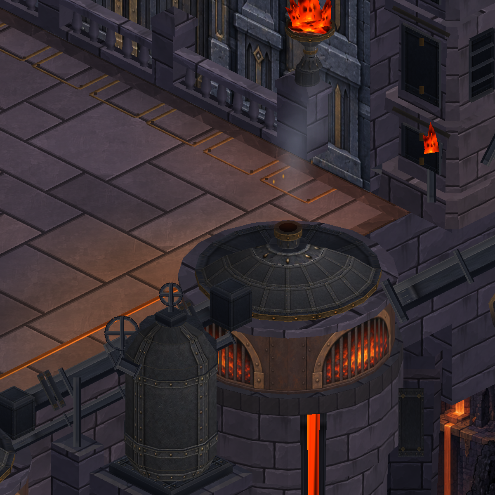

CRYPTFORGE · 04 EKİM 2026
Dökümhane — boyalı yüzey paketi
Gerçek Unity sahnesi. Mimari ve oynanış alanı korunarak zemin, taş duvar, kuyu içi ve kazan kaplamaları yenilendi. Telefon yükleme durumu ve doğrulama kayıtları README dosyasında ayrı belirtilir.
Doğrulama / durum · Zemin · Duvar · Kuyu · Kazan
Birleşik sonuç
 Önce — 1 Ekim Unity görüntüsü
Önce — 1 Ekim Unity görüntüsü Sonra — dört yüzey ve tamamlanan köprü / atmosfer düzeltmeleri
Sonra — dört yüzey ve tamamlanan köprü / atmosfer düzeltmeleriKuyu ve kazan
 İsli duvar, demir destekler ve alttan kor ışığı
İsli duvar, demir destekler ve alttan kor ışığı
Mat metal, bronz kuşaklar ve geniş ateş ağzıSanat hedefi

Referans hâlâ hedefimiz. Bu paket yüzey malzemelerini geliştirir; konseptteki bütün hacim, ışık ve boyalı detay kalitesine ulaşıldığı iddiası değildir.